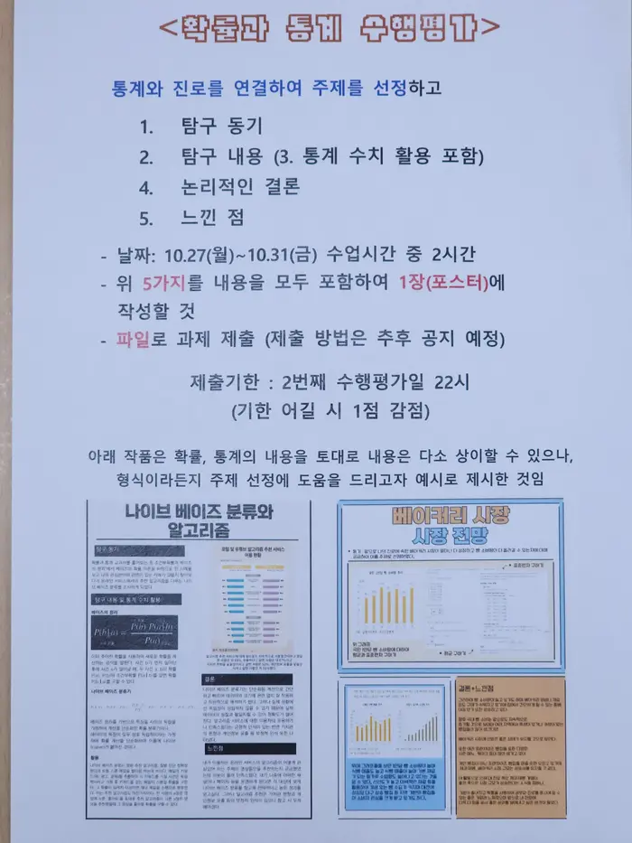

확률과 통계
예정된 수행평가 계획 보기 [ 펼치기 · 접기 ]
현재 진행중 · 예정된 수행평가
현재 진행중 · 예정된 수행평가가 없습니다.
완료된 확률과 통계 수행평가 보기 [ 펼치기 · 접기 ]
주제 탐구하기

기댓값과 분산의 성질 탐구하기
이항계수의 배열 분석하기
실생활 문제 만들기


 이항계수의 배열 분석하기
이항계수의 배열 분석하기
 실생활 문제 만들기
실생활 문제 만들기